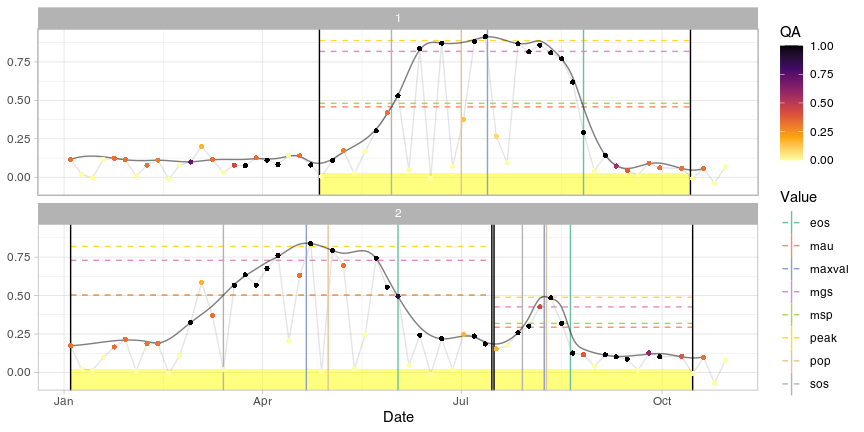

sen2rts is an R library which helps to extract and manage time series from Sentinel-2 archives created with the package sen2r.
This package is currently under development (beta version).
Functionalities currently implemented in the package are summarised below. A wider overview is presented in the vignette “The sen2rts workflows”, which shows a simple, reproducible use case to obtain a smoothed equally-weighted time series, isolate cycles and extract metrics, explaining how the currently implemented functions can be used to perform a common workflow. For documentation about specific functions, see the Reference page.
Installation
Currently sen2rts is not on CRAN; it can be installed from GitHub:
install.packages("remotes")
remotes::install_github("ranghetti/sen2rts")In case of troubles related to the installation of sen2r, whose sen2rts depends, refer to sen2r installation page.
Usage
The following minimal example synthetically shows how to perform the main steps provided by the package; refer to this vignette for a wider explanation.
library(sen2rts)
## Create a Sentinel-2 derived archive using sen2r
# (see sen2r documentation at https://sen2r.ranghetti.info/ )
# and read the paths of the raster using function load_s2paths()
#
# (in this examples, sample data are used)
sen2r_ndvi_paths <- sample_paths("NDVI") # NDVI images (target product)
sen2r_scl_paths <- sample_paths("SCL") # SCL images (quality flag)
## Extract, smooth and gap fill time series
data("sampleroi") # Sample spatial features for data extraction
ts_raw <- extract_s2ts(sen2r_ndvi_paths, sampleroi, scl_paths = sen2r_scl_paths)
# extract time series over sampleroi extension
ts_smoothed <- smooth_s2ts(ts_raw) # smooth time series
ts_filled <- fill_s2ts(ts_smoothed) # gap filling (daily time series)
## Phenological fitting and extraction
dt_cycles <- cut_cycles(ts_filled) # cut vegetation cycles
cf <- fit_curve(ts_filled, dt_cycles) # fit double logistic curves
dt_pheno <- extract_pheno(cf) # extract phenological metrics
## Plot results
plot(ts_filled, pheno = dt_pheno, plot_points = TRUE)
Credits
sen2rts is being developed by Luigi Ranghetti (IREA-CNR), and it is released under the GNU General Public License version 3 (GPL‑3).
To cite this library, please use the entry reported below.
L. Ranghetti (2021). "sen2rts: Build and Analyse Sentinel-2 Time Series. R package version 0.4.0. doi: 10.5281/zenodo.4682829, URL: https://sen2rts.ranghetti.info.
Contributing
This project is released with a Contributor Code of Conduct. By participating in this project you agree to abide by its terms.